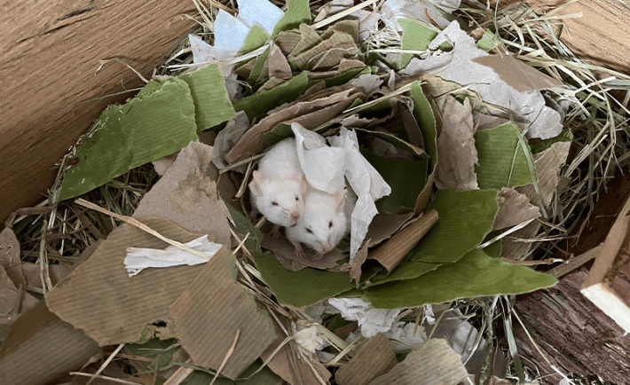
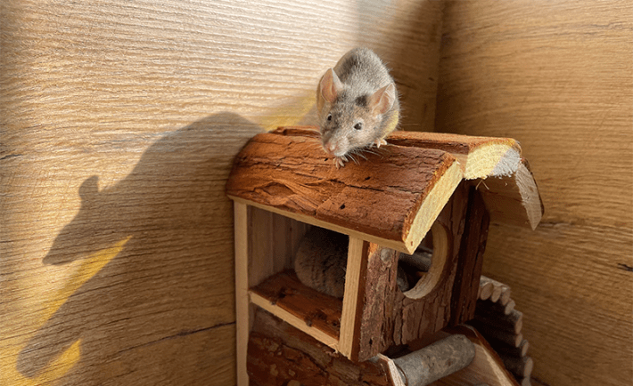
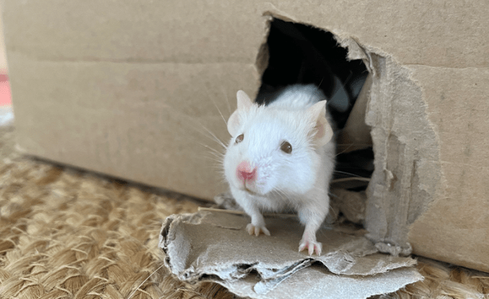

Bullie was the most caring person in the group. Whenever someone else was ill, she would sit with her and comfort her. Bram and Wezel had the strongest friendship. There was just the two of them after their friends had died, and they did everything together: eating, sleeping, pottering about like an old married couple. They also took up nest-building and created beautiful flower-shaped nests for sleeping in.
Bullie, Bram, and Wezel were three of the 25 ex-laboratory mice with whom I lived between 2020 and 2023. These mice were part of a pilot project for the adoption of small laboratory animals—mice and rats—set up by a coalition of Dutch animal advocacy organizations and Utrecht University, in the Netherlands.
Nautilus premium members can listen to this story, ad-free.
Nautilus members can listen to this story.
I am a philosopher who writes about the languages and political agency of nonhuman animals. When I adopted these mice, I looked forward to interacting with them and perhaps becoming friends. The mice soon made clear that they were not interested in that. Whenever I put my hand in their house, they looked at it with disgust and tried to bury it. I decided to play music for them, because they did like my voice. When I played songs for them on the guitar and ukulele, I watched them. Through spending time with them, I learned that mice are not the kind of beings that most humans think they are.

MOUSE HOUSE: Bram and Wezel built an elegant nest.
Mice are used in experiments because they are small and cheap, because they make lots of babies quickly, and because humans see them as simplistic, mechanistic, and replaceable. In the Netherlands, where I am based, around 200,000 mice are used in experiments every year, and about as many are bred but not used. Nearly all are killed. In the United States, an estimated 10 to 111 million mice are used each year; rodents are not covered by the federal Animal Welfare Act, so exact counts are not made. Yet even though humans use so many mice, we know surprisingly little about them.
This is because the experiments are focused on humans. Laboratory mice are rarely studied to learn about mouse cognition, emotions, or social life for their own sake. Instead they are used to create knowledge about human bodies, minds, and disease. Apart from the many problems of extrapolating from mice to humans, those findings don’t always give us a clear picture of mice. For example, mice are frequently scared of male scientists, which may confound observations. The conditions under which mice live also distort insights. Apart from their captivity and boredom, they are often cold.
In order to understand these mice who came to live with me better, I looked for studies about the social lives of laboratory mice: about their characters, friendships, communities, the ways in which they play. I did not find any. There are plenty of studies on capacities like “emotional contagion,” or behaviors like “affiliative grooming”—but those studies paint an incomplete picture because they only focus on one aspect of mouse life, and set out to map species characteristics instead of looking at individuals and social relations. Of course, lab mice generally don’t live long enough to build a community, and scientists usually view them as objects of a study instead of subjects with a life that matters most to them.
I learned that mice are not the kind of beings that most humans think they are.
I then looked for studies about the social lives of mice more generally. Again I did not find what I was looking for. There are studies about mouse communication, sex lives, and social structure, but no long-term studies of their communities as there are for, say, chimpanzees or corvids. I decided to write about mice myself.
I am not a biologist or ethologist, and as a philosopher I am quite critical of human-centered ways of getting to know other animals. I turned to the work of ethologists like Barbara Smuts, who lived with a troop of baboons, and Len Howard, who opened her English countryside home to the birds living outside because she wanted to get to know them. They learned to see other animals by attending to them over long periods of time and on their own terms, approaching them as beings who had their own perspectives on life. I decided I would try to do the same with laboratory mice.
In order to find out more about the relationships between the mice and to understand their practices I first needed to learn who was who. The first group I adopted consisted of 10 female mice. Each had brown hair. After a few days I began to recognize the differences between them. I made a list of their names and physical characteristics. Some were bigger, like Grote Muis (Big Mouse) and Kleinoor (Small Ear). Other mice were smaller, like Kleine Muis (Little Mouse) and Kraaloog (Beady Eye). Witoog (White Eye) had a white ring around one of her eyes, and through describing them in this way I learned to see who was who. After a while I also began to see differences in their characters. Flankie was always the first to try out new foods and houses. Vachtje was a bit of a loner. Kleinoor and Grote Muis were calm, Kraaloog was feisty and fast.
Slowly I began to understand their forms of expression. They made a chk-chk sound when they explored, which expressed a kind of content curiosity. They squeaked loudly while being groomed. When they wanted to be groomed, they had a special movement—holding half of their face flat to the floor—that they used as invitation. Holding their tails straight up meant excitement. Mice who liked each other often sat with the tips of their tails wrapped together. The mice also had many greetings, like kissing one another on the mouth, intertwining their tails’ tips, and aligning their posture with that of another.

EVERY MOUSE IS SOMEONE: Kleinoor was among the first mice adopted by Meijer. Each had their own unique personality; Kleinoor was notably calm.
Over time I also began to see how meaningful some of their habits and practices were. The first time I clearly saw this was when Vachtje could not run in the exercise wheel anymore because of her tumor. (Many of the mice developed tumors, and not much health care was available for them. This is ironic, given how much we know about their bodies and how much cancer drug research involves mice.) The mice liked running in the wheel; when someone else was already running, they sat next to the wheel and gauged its speed with their hands before jumping in. When Vachtje could not make the jump anymore, she still sat beside the wheel and moved it with her hands.
The mice also changed over time. A simple example is grooming. In the first days after a new group arrived, I only saw them groom themselves, but never one another. They usually began mutual grooming after a week or so—quite long in mouse time—in the shoeboxes in which they slept. As time went on, they became more comfortable grooming out in the open, and they especially liked to use the roof of the sleeping shoebox for this.
When they got older, they further developed their practices of care. The first year with each group was easiest: all mice were healthy and happy. But after about a year, they began to develop illnesses—mostly tumors, but they also had strokes. Whenever a mouse was ill, others took care of her. They would sit next to her to support her with their body while eating; healthy mice slept next to mice who were unwell, perhaps to keep them warm. I twice witnessed the mice form a circle around a mouse who was ill. A scientist might write about this as their acquiring potentially useful information about their environment. To me it looked like a circle of care.
Vachtje was a bit of a loner. Kleinoor and Grote Muis were calm, Kraaloog was feisty and fast.
They also began taking care of their dead companions. Whenever a mouse died, I left her body in the mouse house, so that the others could understand she was dead and say goodbye. I saw the same response in all three groups. With the first dead mouse, they ignored the body and went on with their business. When the second and third of their companions died, it frightened them. They were shy and stayed in their sleeping houses more than usual. With the fourth death, they began taking care of the body. They first greeted the dead mouse; then groomed her in the same way they groomed their living companions; and then dragged the body to a corner, where they buried the mouse with nesting material and hay. One New Year’s Eve I missed Wolkje (Little Cloud) and had to take all the boxes and wheels out of their house before I found her body, completely sealed in with pieces of paper in one of the small play houses.
Of course, I did not just look at the mice. They also looked back and tried to figure out what kind of being I was. Over time we formed habits, like the music ritual, and I shared my food with them. When they were old, they could roam freely in the room where their house was located and were not scared of me, so our contact grew. But they were still mostly interested in one another and I did not form strong relationships with them. This changed with Spokie.

KNOWING THEM: Lab mice are studied almost entirely for the benefit of humans. How might we understand mice if we observed them for their own sake?
Spokie was the last mouse of the last group. After her friends died, she was too old to match to new mice. She had never been very social and I was glad that it was her who remained, and not someone who was more attached to the other mice and would miss them. Still, I worried she felt alone, and I often sang or spoke to her. She’d then come out of her house to greet me. We also went on trips through my house: I brought her to different rooms and she enjoyed exploring new spaces. She was not fast anymore, and this was in summer, so we also went into the garden, where she could roam through the grass while I sat next to her. At first she seemed indifferent to my presence, but as time passed she stayed close and sat with me. One day she invited me to groom her. She held one side of her face down to the floor and looked at me with the other eye. I recognized this posture from when the mice invited other mice to groom them. So I began to stroke her head and ears, very softly, because that was what she wanted.
In one of her books about living with songbirds, Len Howard writes that she cannot make general statements about what kind of animal a great tit is. They all have their own personalities, similar to humans. Howard does not mean that birds do not have common characteristics; rather, she wants to draw attention to the fact that they are individuals, and that defining them in species-general ways risks obscuring their individuality.
The same can be said of mice. Flankie, Bullie, Spokie, and the others all had their own characters and personalities. At the same time, it is clear that the existing image of mice in human societies and science, as simple, mechanistic, replaceable beings, is entirely wrong—so I do want to make general statements to counter this. The mice who lived with me were deeply social beings, and care was central to their lives. They continued learning throughout life, and kept developing their projects and relationships with others.
All animals, I think, know more or less the same about what matters in life: community, love, care, death. Seeing how the mice lived their lives—not as a biologist or neuroscientist, but as a philosopher and fellow creature to the mice—taught me about life itself. Because their lives are so short, I also witnessed the cycle of life 25 times. First you are young and look for your place in life; then you are strong and work on your projects; then you slow down; and finally you become part of all there is before you were born. The mice showed me how life and death are always entwined, and how thin the thread is that separates them. In the end, we are all vulnerable beings who are here only briefly. The best thing we can do is take good care of one another.